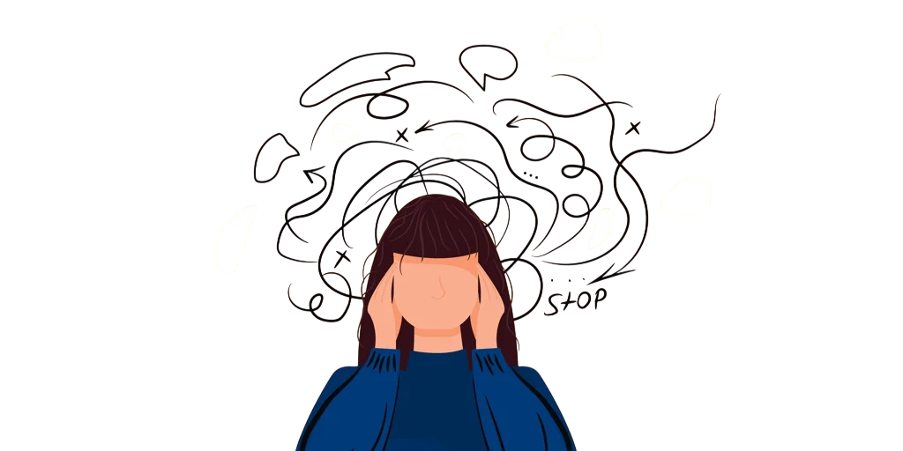
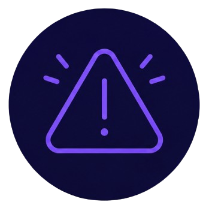
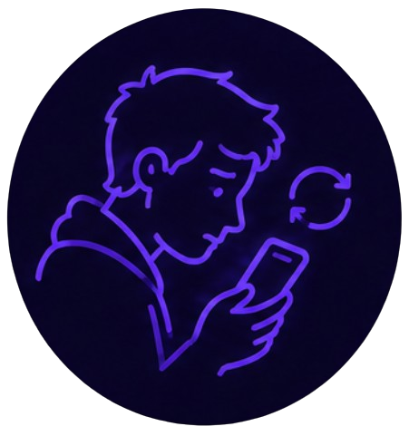
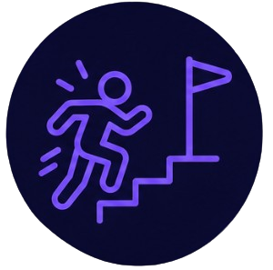
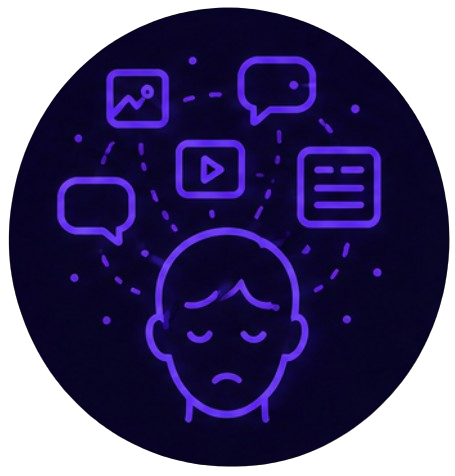
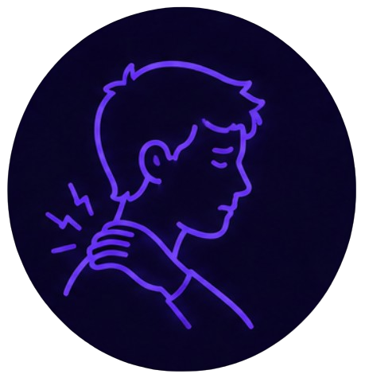
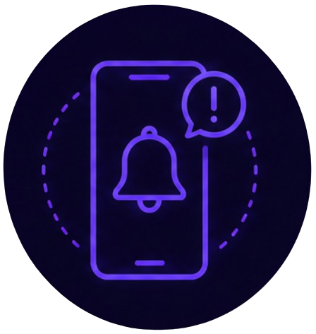

Ansiedad y estrés
El flujo constante de notificaciones, noticias y contenido nuevo mantiene al cerebro en un estado de alerta permanente. Sumado a la necesidad de estar siempre disponible y actualizado, esto puede generar niveles de estrés y ansiedad que muchas veces ni siquiera relacionamos con el uso del celular.

Tip del día
Prueba la técnica de respiración 4-7-8. Inhala por la nariz contando hasta 4, sostén el aire contando hasta 7, y exhala lentamente por la boca contando hasta 8. Repite el ciclo 4 veces cuando sientas que la ansiedad empieza a subir.


Revisión compulsiva
Sientes la necesidad de revisar el celular apenas te llega una notificación.
Dale la vuelta
Qué hacer
Desactiva las notificaciones que no sean urgentes. Deja el celular en otra habitación durante bloques de tiempo específicos.

Sobrecarga informativa
Te sientes agotado después de pasar tiempo desplazándote sin parar por contenido.
Dale la vueltaQué hacer
Establece un límite de tiempo diario en redes usando el control de tiempo de pantalla de tu celular. Reduce poco a poco.

Tensión física
Notas hombros tensos, mandíbula apretada o dolor de cabeza después de mucho tiempo con el celular.
Dale la vueltaQué hacer
Cada hora, haz una pausa de un minuto para estirar el cuello y los hombros. El cuerpo también necesita descansos.

Miedo a perderte algo (FOMO)
Te preocupa perderte una conversación o actualización, lo que te empuja a seguir revisando.
Dale la vueltaQué hacer
Recuerda que es imposible ver todo lo que pasa en internet en tiempo real. No pasa nada si te enteras de algo unas horas después.